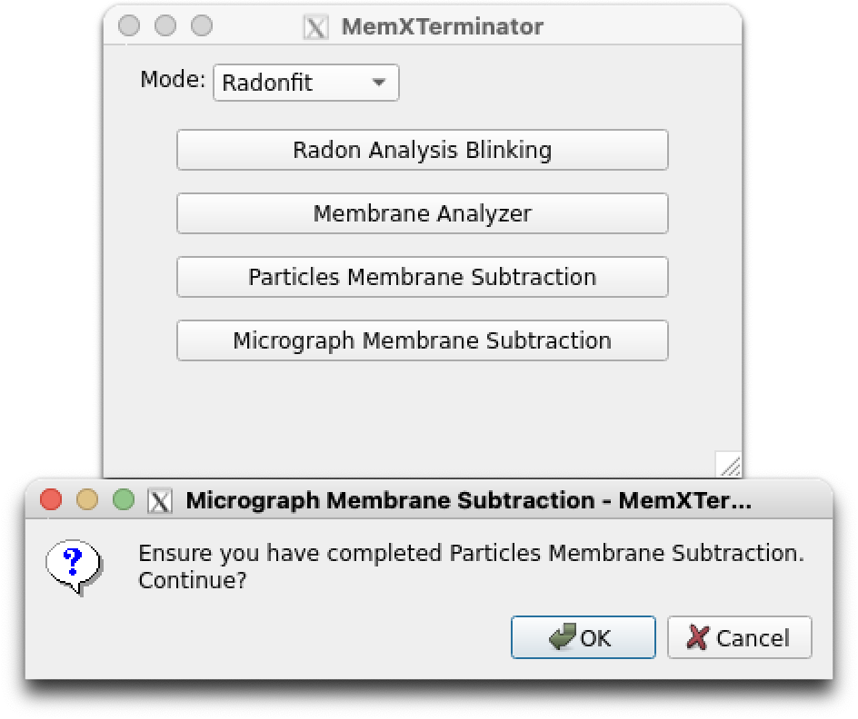

Micrograph Membrane Subtraction¶
Warning
Currently, .cs files are not supported. So, in the Bezierfit mode, You still need to use pyem to convert particles_selected.cs to particles_selected.star. About how to convert .cs to .star, please refer to the Preprocessing section.
1 Basic Idea¶
After the previous step of removing membrane signals from all particles, you can put these membrane-subtracted particles back into the original micrographs to obtain new micrographs with the membrane signals removed. These micrographs can be used for subsequent processing, like re-picking the membrane proteins in them.
-
For each particle \(F_{RI}(x,y)\), we have a particle with membrane signals removed, \(F_{SRI}(x,y)\);
-
Based on the positional information of particles provided by
cryoSPARC, we can replace the original particle \(F_{MI}(x,y)\) in the micrograph with \(F_{SRI}(x,y)\) to obtain a micrograph with membrane signals removed; -
Of course, during the replacement process, considerations should be given to ensuring that \(F_{SRI}(x,y)\) is at the same scale as the original \(F_{RI}(x,y)\) and to how to deal with overlapping areas.
2 Specific Steps¶
2.1 Open the Interface¶
First, open the MemXTerminator main program, select the Radonfit or Bezierfit mode(based on which mode you have used for particle membrane subtraction), then choose Micrograph Membrane Subtraction, and enter the Micrograph Membrane Subtraction interface:
- For
Radonfitmode:
 Micrograph Membrane Subtraction interface (Radonfit)
- For
Bezierfitmode:
 Micrograph Membrane Subtraction interface (Bezierfit)
Micrograph Membrane Subtraction interface (Bezierfit)
2.2 Set Appropriate Parameters¶
The Micrograph Membrane Subtraction interface is as follows:
 Micrograph Membrane Subtraction main interface
Micrograph Membrane Subtraction main interface
You need to enter the following file path:
Particles selected starfile: Choose the star file that saves all particles information, usuallyparticles_selected.star;
You can set the following parameters:
-
Cpus: You can set multiple CPUs for computation. Default is 15. However, if your GPU memory is limited, it is advised not to set too many CPUs to avoid memory issues; -
Batch size: You can set how many micrographs are processed in parallel. Default is 30, twice the number of CPUs. It is recommended to set it as a multiple of the CPU number. If your GPU memory is limited, it is advised not to set a large Batch size.
After setting the appropriate parameters, click Launch to begin the membrane signal removal from the micrograph.
How to resume from a breakpoint
Like particle membrane subtraction, if the job is interrupted for some reason, please don't worry. You can continue to do the micrograph membrane subtraction because every time you begin to do it, the software will read the mms_run_data.log file, which records the micrographs that have been processed. The software will automatically skip the processed micrographs and continue to process the remaining micrographs.
3 Results¶
You will find a subtracted folder next to your folder containing the original micrographs, like this:
Sxxx/
├── motioncorrected/
├── subtracted/
In the subtracted folder, you will find all the .mrc files of the micrographs with membrane signals removed. You can proceed with further processing using cryoSPARC.
Note
The orginal micrographs don't have to be in the motioncorrected folder. The software will take the second folder in the directory as the original micrographs folder. For exmaple, in the particles_selected.star file, the rlnMicrographName column contains the path like Jxxx/import/xxxmicrograph.mrc. Then the software will take the import folder as the original micrographs folder and create a subtracted folder next to it.